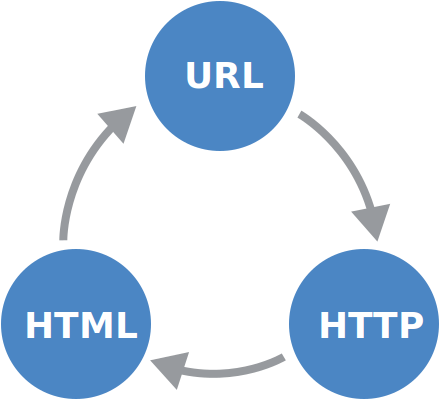

VIDEO
J'irai où ton souffle nous mène,
Jean-Jacques Goldman, Aïcha
I'll go where your breath takes us
Jean-Jacques Goldman, Aïcha
The Web seems an “evident” extension
What is so special about
This flyer predates the Web's boom.What is missing?
The Web actually consists of

The Web actually consists of
A URL uniquely identifies a resource.
HTTP allows us to retrieve a representationHyperText Transfer Protocol An HTML document can represent a resource,HyperText Markup Language
An URL uniquely identifies and locates
a resource anywhere in the universe.
A string is a unique identifier ifat most one entity corresponds to it.
A national number uniquely identifies a person,
A string is a unique locator ifat most one location corresponds to it.
A street address uniquely identifies a location,
A (well-chosen) URL combines
http://en.wikipedia.org/wiki/Marissa_Mayer
This URL identifies the current Wikipedia article
about Marissa Mayer.
It does not (also) identify Marissa herself.
Otherwise, it wouldn't be unique anymore.
At the same time, this URL allows us to locate
the Wikipedia article about Marissa Mayer.
Again, not Marissa herself—nor anything else.
Deceptively simple, the URL is probably
the most revolutionary part of the Web.
The flyer we saw earlier shows
publisher-specific download instructions
machine-dependent execution
Unique identification partially existed,
e-mail address and server names are global
document names are server-specific
The generic URL syntax
<scheme>:<scheme-specific-part>
A typical HTTP URL
http://<host>/<path>?<search>#<fragment>
hostname
identifies the machine
path
identifies the resource within the machine
search
optionally refines the resource
fragment
optionally identifies a part of the resource
An HTTP URL provides the instructions
http://<host>/<path>?<search>#<fragment>
The client looks up the host's IP address.
The client uses DNS for this.
The client requests /<path>?<search>.
The server generates a response in a server-specific way.
The client finds #<fragment>.
Fragments are defined by the representation format.
An HTTP URL provides the instructions
http://en.wikipedia.org/wiki/Marissa_Mayer#Career
The client looks up the IP address of en.wikipedia.org .
This address is 91.198.174.192 .
The client requests /wiki/Marissa_Mayer .
The server generates the corresponding Wikipedia article.
The client finds #Career .
This corresponds to a header in the HTML document.
The URL became part of a family
URL – Uniform Resource Locator (RFC1738 )
unique identification and location of resources
mailto:ruben.verborgh@ugent.be
URN – Uniform Resource Name (RFC2141 )
location-independent resource identifier
urn:isbn:0-83891251-6
URI – Uniform Resource Identifier (RFC3986 )
The broadest family is IRI,
Not all characters are allowed in a URI.
IRI – Internationalized Resource Identifier (RFC3987 )
non-ASCII chars don't need to be encoded
chars with other meaning still need encoding
http://🛀🌰🐊🎩🍓🐒🐝👊.🍕💩.ws
HTTP is a protocol to transfer representations
from a client to a server.
HTTP standardizes how clients send a request representation
of a resource through its URL.
HTTP standardizes how servers reply with a response
that can contain a representation.
The most widely used version is HTTP 1.1
(RFC2616 ).
After resolving the server's IP address,
After resolving the server's IP address,
To obtain http://en.wikipedia.org/wiki/Marissa_Mayer ,
the client connects to 91.198.174.192 on TPC port 80,
and sends this request:
GET /wiki/Marissa_Mayer HTTP/1.1
Host: en.wikipedia.org
User-Agent: MyBrowser/1.0
Accept: text/html
HTTP has a limited number of methods.
GETtransfer a representation
HEADtransfer only status and headers
POSTperform a resource-specific operation
PUTreplace all representations
DELETEremove all representations
An HTTP method is safe
The client does not request
If the server still changes something,
Safe methods include GET and HEAD.
Automated clients cannot cause harm with these.
Servers not respecting this contract act dangerously.
An HTTP method is idempotent
The client can execute an idempotent request
If a request (maybe) failed, just try it again.
Idempotent methods include all safe methods,PUT and DELETE.
Deleting something multiple times
Repeating other methods might be undesired.
Clients send the hostname,so one server can host multiple websites.
Although the client resolves it to an IP address,
There is no one-to-one mapping
One website can be hosted by multiple servers .
Multiple DNS entries exist for a hostname.
One server can host multiple websites .
The Host header tells the server which one to pick.
When a server receives a request,
The response starts with a status line .
The response can contain header fields .
The response can optionally contain a body .
depending on status code
contains the actual document contents
When a server receives a request,
In response to our previous request :
HTTP/1.1 200 OK
Date: Wed, 18 Feb 2016 09:30:46 GMT
Content-Type: text/html; charset=UTF-8
Last-Modified: Sun, 24 Jan 2016 18:26:27 GMT
<!DOCTYPE html>
<html lang="en" dir="ltr" class="client-nojs">
…
HTTP has 5 categories of status codes
100–199 info – the client may continue200–299 success – request understood & accepted300–399 redirection – further action is needed400–499 client error – the request cannot be fulfilled500–599 server error – the server failed to fulfill
HTTP has 5 categories of status codes
HTML is a markup language thatstructure of documents.
HTML divides a document into elements ,tags .
Tags begin with “<” and end with “>”.
(Regular) closing tags begin with “</”.
Self-closing tags end with “/>”.
Opening tags can have key/value attributes.
The key name is followed by “=” and its value.
The value is usually surrounded by (single/double) quotes.
An element consists of its tags, attributes,
and child nodes (elements and/or text).
This is a fragment of an HTML document.
<main>
<h1> This is a title.</h1> <p id="introduction" class="summary">
This is a paragraph<br/> <em> emphasized</em> </p> <img src="image.jpg" alt="an image" /> </main>
The HTML specification restricts
A few dozen tags
exist for different element types.
They have rules for what attributes they can have,
and what child elements they can/should have.
There are three main parts:
<html> for the entire document<head> for document metadata<body> for document contents
HTML documents can contain hyperlinkshypermedia controls .
The <a> tag starts a link toward another resource.
<a href="http://perdu.com/">Lost?</a>results in the link “Lost? ”
A <form> element creates requests
from user input.
This results in an URL for a resource,
whose representation can be retrieved through HTTP.
HTML documents can embed or use
Embed images, audio, and video.
Use style sheets, fonts, and scripts.
<link rel="stylesheet"><script>
Embed other pages (instead of linking to them).
HTML is intended for markup ,makeup .
HTML elements focus on structure…
<h2>The <em>new</em> section</h2>
…not on aesthetics.
<font size="5">
Makeup -only elements were removed from HTML5.
The Web supports an immense variety
interactive (graphical) browsers
applications
Web applications
(native) desktop & mobile applications
crawlers
embedded devices and sensors
All clients require support
networking technologies
the HTTP protocol
many libraries exist
often combined with networking support
one or more representation formats
not necessarily (only) HTML
Browsers offer an interactive environment
They render HTML elements as interactive controls.
They typically support styles, media, and scripts.
Standards ensure consistency (mostly) .
The main differences are features and preferences.
operating system
performance
extensions
Web applications perform HTTP requests
A script on a webpage can make HTTP requests.
The server typically returns JSON or XML responses,
Alternatively, the server could return HTML,
Scripts can be triggered automatically
clicking a button or link
pressing a key (autocompletion)
Desktop and mobile applications behave
They use their own infrastructure,
They typically request JSON (or XML),
HTML can be used to render partial views.
Is there a real need then for a native app?
Crawlers process and/or index webpages,
Crawlers extract, process, and index text contents.
They also analyze (some) structured annotations.
Using links, they discover other pages.
The HTTP protocol does not attach
Even though you might attach meaning to an URL likehttp://example.org/products/guitars.html?brand=gibson ,
In particular, slashes do not necessarily indicate folders;
The server might just have used this URL instead:http://example.org/products-guitars?html%2Fbrand.gibson
Web servers exist in many kinds and
file servers
application servers
for interactive sites
for editable content (Content Management Systems)
reverse proxy
delegates requests to other Web servers
A static file server maps HTTP URLs
A config file usually assigns a root folder per domain.
http://example.org/images/products/guitar.jpg
could map to /var/www/example.org/images/products/guitar.jpg
Folders map to possible index files.
http://example.org/images/products/
could map to /var/www/example.org/images/products/index.html
Custom permissions and rules can be set.
An application server uses server-side code
The request is parsed by an application framework,
Implementors can react to specific URLs or patterns,
typically generating responses using templates.
Different languages and frameworks exist.
languages:
Java
PHP
JavaScript
Ruby
C#
…
frameworks:
Spring MVC
Laravel
Ruby on Rails
ASP.Net
…
Each machine can open one TCP port 80.
What if we need to serve static and dynamic files?
Only one application can listen to a given TCP port.
Configure your servers to run on internal ports
Run a reverse proxy
(NGINX ,
Apache ,
…)
on port 80,
Switch based on domain name and/or URL.
Several intermediaries may exist
In contrast to many other protocols,
This is not as easy with other protocols.
removeObject.getMessage(234);
removeObject.getMessage(234);
removeObject.deleteMessage(234);
If a proxy server is inserted before the remote server,getMessage?
If so, how long?
HTTP can be transparent because of
Caching
is possible with headersCache-ControlETag
Cache-Control: max-age=3600ETag: UniqueHash456
The intermediary fetches the requested item
Repeated requests for the item
The standardized method semantics
Repeated GET requests can be cached,GET is safe.
The client did not ask for changes,
Since nothing changes, we can bypass the server.
If POST or PUT are used on a resource,GET must not be read from cache.
POST or PUT are not safe and may change things.(Repeated identical PUT requests can be ignored though.)
Intermediaries can play different roles
caching
to improve performance and availability
security
to handle authorization and authentication
routing
to redirect toward the right server
load balancing
to distribute load over servers
anonymizing
to bypass identification or logging
Depending on their position the network,forward or reverse .
(forward) proxy
in the network of the client
typically used for caching
possibly for security/anonymity purposes
reverse proxy
in the network of the server
typically used for caching
also for routing, hiding/abstracting remote architecture
Caching can happen virtually anywhere—
The notion of “client” and “server”
Cascading Style Sheets state declaratively
Web Fonts allow webpages
JavaScript is a programming language
JSON is a lightweight representation
XML is a popular data model and format
Web feeds are documents that
![[Ghent University Logo]](../images/logos/ugent.svg)
![[iMinds Logo]](../images/logos/iminds.svg)
 Except where otherwise noted, the content of these slides is licensed under a Creative Commons Attribution 4.0 International License.
Except where otherwise noted, the content of these slides is licensed under a Creative Commons Attribution 4.0 International License.


![[A flyer with instructions on how to obtain files through a mailserver and FTP server.]](images/before-web.png)